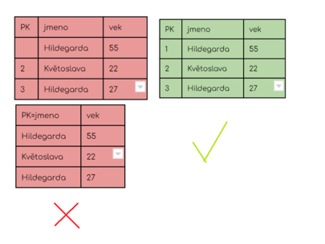
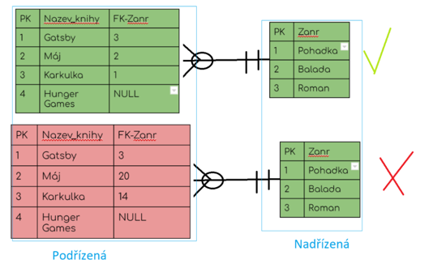

Integrita-dat-relacni-databaze
Otázky
co je to integrita dat
jaké znáš druhy
proč je důležité mít integritu v DB
popiš druhy integrit
Integrita dat
databáze je konzistentní /celistvá a data jsou v ní správná, vyhledatelná a trvalá
konzistentní DB neobsahuje --> redudantní data, datové sirotky (záznam co nikomu nepatří)
Integritní omezení
Entitní integrita
každá entita musí mít právě 1 PK, aby bylo možné vyhledat konrétní objekt dané entity

Referenční integrita
Každá entita na straně N musí mít FK, který musí odpovídat jednomu z PK z entity, na kterou odkazuje
FK může být NULL, ale nesmí být nesmyslný

Doménová integrita
omezuje atributy - datovým typem, rozsahem, povinností, unikátností, předdefinovanou hodnotou (not null, unique, default...)
SQL keywords --> UNIQUE, NOT NULL, CHECK, DEFAULT, data type
příklad :
nvarchar(20) nazev NOT NULL
Sum-up
Integrita - zajištění konzistence dat v DB
Typy integrit
Entitní - každá entita musí mít právě 1 PK
Referenční - podřízená tabulka musí mít FK, který odpovídá hodnotě PK nebo null z tabulky nadřízené
Doménová - omezení atributu při deklaraci